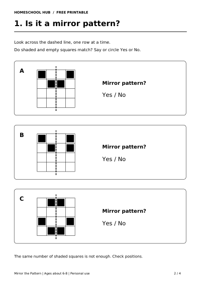

Free printable
Mirror the Pattern: Line Symmetry on a Grid
Ages about 6–8
Look across a vertical mirror line and match squares in the same row at the same distance from the line. Check both shaded and empty squares.
Four A4 pages include a parent model, three mirror-pattern checks, three small grids to complete and drawn answers. Each grid has four rows and four columns.
Try 5–10 minutes with a child who can follow a row and point to individual squares. Print pages 2–3 in black and white. An adult can read aloud and do the shading while the child points.
Keep the given left side and shade matching squares on the right. A square beside the line matches the square just across it; an outer square matches the outer square in the same row. Equal counts alone do not make a mirror pattern. No mirror or cutting is needed.
Explore shape recognition with Shapes or compare equal parts with Halves.
